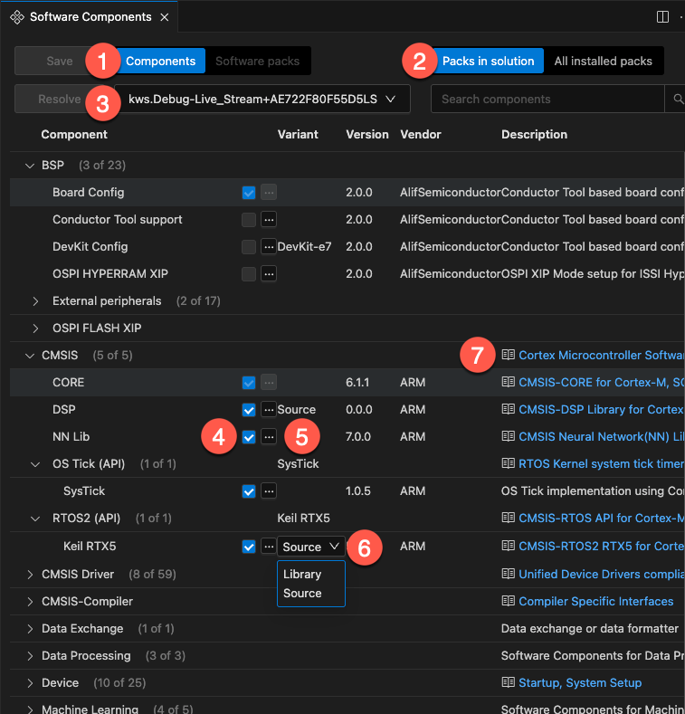

Manage software components
The Software Components view shows all the software components selected in the active project of a solution.
You can do the following:
-
Modify the software components of the project
-
Manage the dependencies between components for each target type defined in your solution, or for all the target types at once
Software Components view
Open the CMSIS view  . In the Solution outline, click Manage software components
at the project level. The Software Components view
opens:
. In the Solution outline, click Manage software components
at the project level. The Software Components view
opens:

The default view displays the components available from the packs listed in your solution. Use the Search field to search the list of components.
Layer icons indicate which components are used in layers. In the current version,
layers are read-only, so you cannot select or clear them. Click the layer icon of a component to open the *.clayer.yml
file or associated files.
Learn more links are available for some components. Click the links to open the related documentation.
Modify the software components in your project
You can add components from all the packs available, not just the packs that are already selected for a project.
Modify the context displayed
-
In the Project drop-down list, select the project for which you want to modify software components.
-
In the Target drop-down list, select a specific target type. If you want to modify all the target types at once, select All Targets. Note that you might have only one target.
-
In the Software packs drop-down list, you can filter on the components available from the packs listed in your solution with the Solution: <Solution-name> option. You can display the components from all installed packs with the All installed packs option.
Select components
Check that the All toggle button is selected to display all the components available. Switch to Selected to display only the components that are already selected.
Use the checkboxes to select or clear components as required. For some components, you can also select a vendor, variant,
or version. The cproject.yml file is automatically updated.
Validation
Manage the dependencies between components and solve validation issues from the Validation panel. Issues are highlighted in red and have an exclamation mark icon next to them. You can remove conflicting components from your selection or add missing component dependencies from a suggested list.
If there are validation issues, move your cursor over the issues in the Validation panel to get more details. Click the proposed fixes to find the components in the list. In some cases, you might have to choose between different fix sets. Select a fix set in the drop-down list, make the required component choices, and then click Apply.
If a pack is missing in the solution, a Component's pack is not included in your solution message displays in the
Validation panel. An error also displays in the Problems view. Install the pack with the cpackget command.
There can also be issues such as:
-
A component that you selected is incompatible with the selected hardware and toolchain
-
A component that you selected has dependencies which are incompatible with the selected hardware and toolchain
-
A component that you selected has unresolvable dependencies
In such cases, you must remove the component. Click Apply from the Validation panel.